正雲寺/福島県会津若松市
大分県の善徳院を憶えておいでであろうか？あの合掌ゲートの寺である。
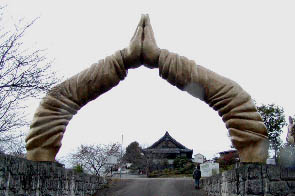
今回はその寺の後日談からハナシをはじめさせていただく。
善徳院を訪問したのが2002年の秋。その時点で境内は建設中にしてすでに荒廃していた…ように思う。
その後、風の便りに「あの寺は潰れた」「売りに出されている」などというハナシは聞いていた。
その辺りの経緯は私の愛読誌「寺門興隆」2005年8月号に詳細が記されているので参照されたし。
ちなみに寺門興隆は元々月刊住職という、涙が出るほど素晴らしいタイトルの雑誌だった。
現在もつっぱり和尚の骨山日記をはじめとしたユニークな連載やお寺と檀家のトラブルなどなど週刊誌顔負けのエグい記事が満載の現代日本仏教シーンの裏側をえぐりまくりの面白い雑誌なので是非御一読を。
私にとっちゃアサヒ芸能よりエキサイティングですわ。
あ、ハナシが逸れましたね。で、結局善徳院は福島県の正雲寺というお寺が再整備し、現在は由布 正雲寺分院というカタチになって新しく生まれ変わった、という次第。
ちなみに気になる合掌ゲートは白く塗り替えられたものの健在。大観音も元気な様子である。
一時は廃棄の可能性も心配されたが、目出度く再出発することができて良かった良かった。
で、ここからが本題です。
合掌ゲートを再生した正雲寺とはいかなる寺か？
調べてみると、何だか面白そうな事になっているので行ってみた。
正雲寺は会津若松市の山中にある「宗教から衆教へ」がキャッチフレーズのお寺だ。
車で山道を走っていくとその全容が現れる。周辺には民家など何もないのでかなり目立つ。
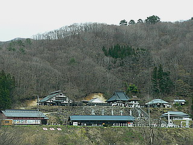
境内に入ってビックリ！いきなり無数の灯籠とお地蔵さんで斜面が埋め尽くされていた。
あの合掌ゲートを再生させた寺だけに並みの寺じゃあないことは薄々予想はしていたが…
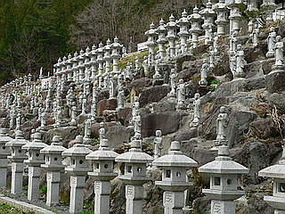
会津若松市街から離れている割には次から次へと観光客らしき人達が訪れている。
意外と有名なお寺なんだろうか？
境内の建物はほとんど近年のものだが永禄5（1562）年に開山されたという歴史のある寺だ。
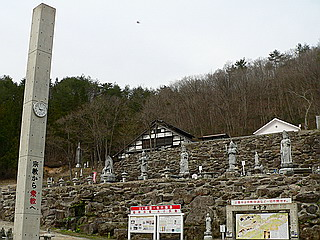 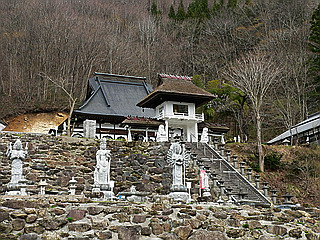
寺は傾斜地にあり、上に本堂、下に茶屋、美術館、博物館などがある。
色々と見所がありそうだがまずは本堂に参拝しよう。
天上天下唯我独尊像が眩しいありがとうの鐘を過ぎありがとう灯籠の並ぶ階段をのぼる。
…ありがとうだらけですね…
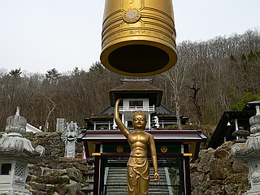 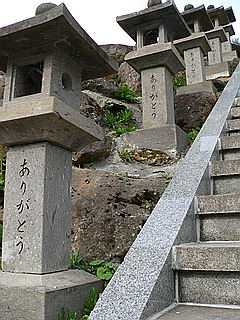
階段の左手には大きな観音サマの石像が。
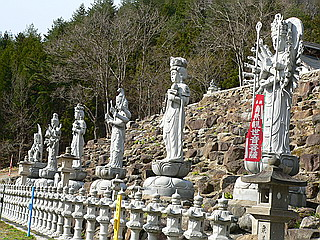
そしてコンクリ造なのに藁葺き屋根という謎の歓喜門を潜ると本堂がある。
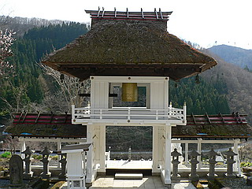
本堂はごく普通だったので割愛しますが、その脇にあったお堂が強烈だった。
内観堂といい内観（まあ、瞑想ですかね）をする部屋なのだというが、このグラフィティなインテリアったら！
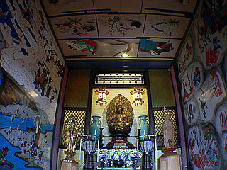
左右上後の壁が絵で覆い尽くされている。
しかもその絵ったら…
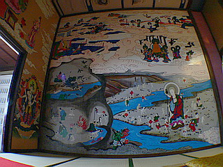 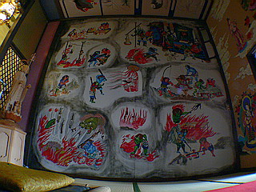
左は三途の川 右は地獄絵図
あの世の光景に囲まれている。
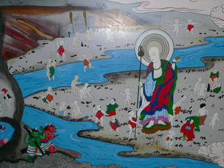 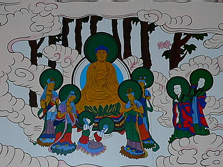
こんなオソロシイ部屋で内観、って、どうなんでしょう？
左右の壁が気になっちゃって気になっちゃって自分の内側なんぞ見てられないのでは？
あ、でもそれを振り切って内観せよ、という事なのか…
それにしても日本の地獄も残酷さのイマジネーションとしてはタイに負けてませんねえ。
あとはコレを立体でつくるかどうか、の差なんですけど…
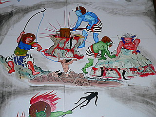 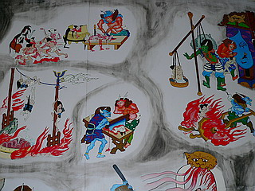
そして天上は九相図。
岩手県立博物館で見た九相図と同様、生きている姿から死、そして遺体が腐敗して白骨化し、最後は墓に納まる（いや、単に骨が風化して成仏した状態のメタファーとして墓石が描かれているのかもしれない）までを克明に記録している絵である。
この九相図という絵は日本には幾つか現存している。
何通りかのバリエーションがあるが、基本的には遺体の腐敗していく様子が時系列順にマンガ形式で表現されている。
ここの九相図もご多分に漏れず腐りまくり。最近描かれたものだろうが、どの九相図を参照したのかは勉強不足で不明です。
三途の川も地獄絵図も九相図もみな同じ人が描いたのだろうか。遠目にはエグイのだがよく見ると微妙〜にほのぼのテイストの絵なので全然恐くない。描き込まれているので圧迫感は凄いけど…あ、その圧迫感を利用して内観せよ、という事？
隣には祈願所。
今度は曼荼羅図と仏画と十王図に囲まれている。
ここもかなりこってりした空間でした。
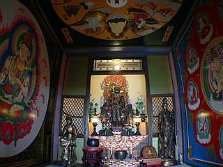 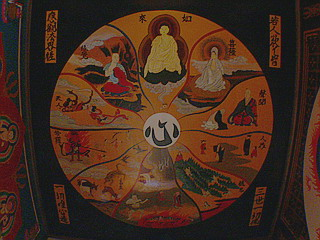
十王図も先程の地獄絵図同様、のほほ〜んとした血みどろ世界。
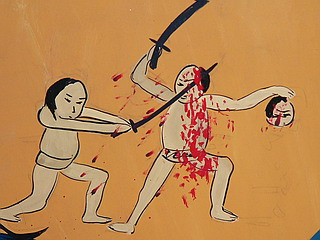 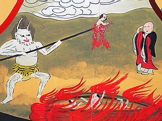
まるで絵本のような心温まる残虐シーン。まんが日本昔ばなしみたい。
カリキュラマシーンと家政婦の絶妙な語りが聞こえてきそうでしょ。
「エイっ！(家政婦）」「あひぃ〜（カリキュラ）！」注；声を裏返えして読むと効果的です
そんなこんなで本堂周辺の参拝をした後に階段下の博物館へ。
ちなみにここのお寺の素晴らしいところは（多分どこでも）自由に入れて（多分どこでも）自由に撮影ができる点。やれ撮影禁止だ、檀家以外入場禁止だ、と世知辛いお寺が多い昨今（いや、事情はわかるのですよ）、あえて積極的に撮れ、見ろ、という姿勢はろくな信仰心を持たない割にはいつもお寺をウロウロしている因果者の私としてはそれだけで嬉しくなる。これはひとつの改革だと思う。これも衆教の一環なのだろうか。
で、博物館。
館内にはアジア各地から集められた仏像が並んでいる。
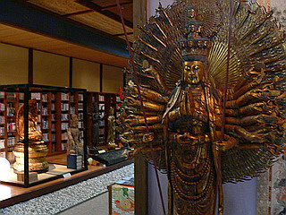 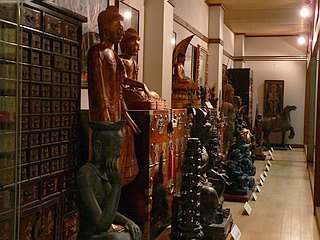
タイやミャンマーで見かけたタイプの仏像が並んでいる。ああ、懐かしや。
また、仏像だけでなく仏教に関連する書籍や映像資料がズラリと並んでいる。
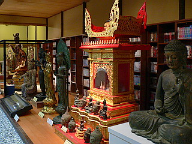
こちらは映像資料。
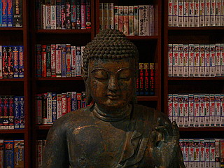 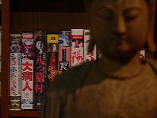
やっぱり八つ墓村は資料として欠かせませんね…
さすがに合掌ゲートはなかったが、硬直化したバビロン仏教からのエクソダスを試みようとする気概が感じられた。
2007.2.
珍寺大道場 HOME